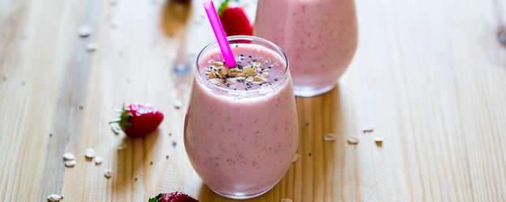

Strawberry Oatmeal Smoothie

Vegan strawberry oatmeal smoothie, great for breakfast
Time: 5 mins Servings: 2
Ingredients
- 1 cup soy milk
- ½ cup rolled oats
- 14 frozen strawberries
- 1 banana, broken into chunks
- 1 ½ teaspoons white sugar (Optional)
- ½ teaspoon vanilla extract (Optional)
Steps
- Blend soy milk, oats, strawberries, and banana in a blender
until smooth. Add sugar and vanilla and blend again until smooth.
- Pour into glasses and serve.